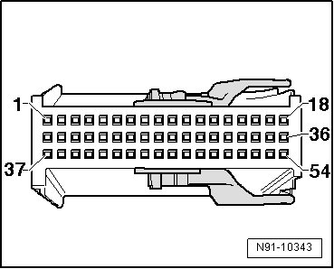

Connecting Additional Audio/Video Units on TV Tuner
Connecting Additional Audio/Video Units on TV Tuner
To connect additional audio/video units, only use suitable adapter cables made by Votex.
Using the radio navigation system user interface, A/V input 1 and 2 can be accessed. Refer to --> Radio Navigation S2 Owner's Manual
The terminal assignment in the 54-pin connector in the line to the TV tuner is as follows:

A/V input 1 connector assignment
47 Audio signal, left
48 Audi signal, right
49 Audio/video ground
50 Super VHS (Y)
51 Super VHS (C)
52 FBAS
• Most standard auxiliary devices (e.g. DVD players) have an FBAS output (yellow cinch socket) for the picture signal so that the Super VHS outputs do not need to be used in this case.
A/V input 2 connector assignment
40 Audio signal, left
41 Audi signal, right
42 Audio/video ground
43 Super VHS (Y)
44 Super VHS (C)
45 FBAS
• Most standard auxiliary devices (e.g. DVD players) have an FBAS output (yellow cinch socket) for the picture signal so that the Super VHS outputs do not need to be used in this case.